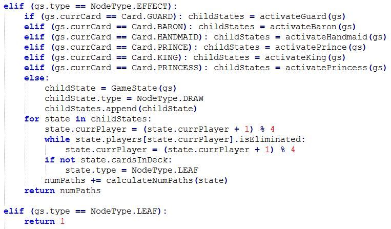

Escape: The Curse of the Temple Review

For those times when you need just a bit more panic in your life.
3/11/2017
How many different ways can a round of Love Letter unfold?
Posted on 3/25/2017 by Tim Rice
This project all started with a curiosity. Every time I play Love Letter, I am consistently impressed that the game offers a variety of interesting decisions each time I play. You would think that a game that consists of only 16 cards (and only 8 unique ones) would exhaust itself pretty quickly, but that doesn’t seem to be the case.
This got me thinking. How many different ways can a round of Love Letter unfold? This question has often been pondered for abstract games such as Chess and Go, but those numbers are so enormous that no one has ever been able to calculate their exact values. Mathematicians have found that there are far more possible Chess games than there are atoms in the universe (source), and Go has even more than that. Pretty crazy when you think about it.
Surely though, a game as simple as Love Letter doesn’t have that many possibilities...right? I made it my project to figure out how many Love Letter rounds are possible, and it turned out to be a lot more difficult than I expected. Nonetheless, the results are pretty interesting.
Be advised, this article contains math and computer science jargon (you have been warned). There’s a little bit of graph theory, some combinatorics, and even a recursive algorithm (the three ingredients for a good time, am I right?? Sigh….).
If you’ve never played Love Letter before, it’s pretty simple. There is a deck of 16 cards: 5 Guards, 2 Priests, 2 Barons, 2 Handmaids, 2 Princes, 1 King, 1 Countess, and 1 Princess. Each round, one card is set aside (face down) and each player is dealt one card. Players will then take turns drawing one card, playing one of their two cards, and applying the played character's effect. Each character has a different effect (these will be explained later). This continues until either the deck is exhausted, or only one player remains.
In order to count the number of games, we need to define what a game state is and when it changes. In Love Letter, every draw and every decision affects the options that are available for the rest of the round. Once the princess is drawn, for example, it can never be drawn again. For the purposes of this analysis, the game state changes when:
Note that the game state does not change when a player gains new information. The Priest’s effect, for example, never changes the game state under this definition. Even though it gives a player information, which is an important part of the game, it does not affect anybody’s options in any way. Players are never required to use any of the information that they’ve gained, so even though you could say that choosing to look at one player’s card over another constitutes a different game experience, I decided against tracking this type of information flow.
I’m also assuming that there are four players starting each round. These same methods could be used to count the number of two-player and three-player games as well, but I’m sticking with four players for now.
In algorithm design, a decision tree is a common tool used to structure a series of possible outcomes. In summary, a decision tree is a group of hierarchically connected nodes. If we use this to model a game, each node represents a change in the game state. Each time the game state changes, each node branches off and creates some number of child nodes equal to the number of possible outcomes that result from that change.
In the context of this problem, our top-level node represents the first thing that happens in the game: setting the first card aside. There are 8 different possible outcomes here (one for each character being removed), so our first change branches off into 8 different nodes:
All of these new child nodes now need to handle the second game state change, which is the dealing of the first card. You might think that each of these nodes will now branch off 8 new nodes of their own, but that isn’t true. In cases where the King, Countess, or Princess are set aside, it isn’t possible to pull them from the deck anymore because there are only one copy of each:
We’re only two cards in and we’re already at 61 unique paths...so you can begin to see how rapidly the possibilities multiply. In order to find the number of possible games, we need to figure out a way to count the number of leaf nodes (nodes that don’t generate any children), since one leaf node represents one game’s end. Some of these will appear at the very bottom of the tree, but since a game of Love Letter can end before the deck runs out, leaf nodes will appear at many different levels of the tree.
Every round of Love Letter follows the same pattern. It starts with 5 draw nodes (one card set aside and one dealt to each player) which can create anywhere from 1-8 branches each, and then each player’s turn consists of three node levels (draw, choice, and effect). These three node levels repeat until the game ends.
The choice nodes usually create 2 branches (a player decides between two cards in their hand), but sometimes the player doesn’t have a choice (in cases where the countess must be played, or he/she has two of the same card in hand), so in those cases, only one branch is created.
The effect nodes are where things start getting complicated. Some characters have no effect at all on the game state when they’re played, while others can create up to 4 different branches. In addition to that complexity, the number of branches that a character’s effect creates depends on the game state at the moment that it triggers, so in order to understand how this tree develops, we first need to understand how many options these effects give players under all possible conditions.
The Guard creates 1-4 branches:
The Priest always creates only one branch, and it has no special effect on the game state.
The Baron creates 1-3 branches:
The Handmaid always creates only one branch, but she does have an effect on the game state as her protection limits the options in future branches.
The Prince creates 1-4 branches:
The King creates 1-3 branches:
The Countess always creates one branch that has no effect on the game state when played. It is relevant, however, during choice nodes because it eliminates branches when the other card in hand is a Prince or the King.

The Princess always creates one branch where the current player is eliminated when played. Interestingly, this never happens in any real-life game of Love Letter, but it is a valid option nonetheless.
The first thing I tried to do to solve this problem was develop a counting equation, but I quickly realized that incorporating possibilities from every card effect and accounting for interactions at so many different levels of the tree was too complicated for me to handle by hand (perhaps a mathematician could?). I did, however, gain some interesting insight during this process.
The game can end after 3 turns are complete (one player is eliminated each turn), or it can go as long as 11 turns (if no princes are played, and at least two players survive until the end). This means that the height of the tree is 5 + (11 * 3) = 38, but leaf nodes can appear at depths 14 (5 + (3 * 3)) and below.
I also discovered that there are 10,897,286,400 (16!/5!2!2!2!2!) different ways a deck of Love Letter cards can be shuffled (source). This doesn’t mean that much for this problem since there are a lot of games that end before the entire deck is drawn, but it still gives some perspective on the problem’s enormity considering that the number is that big without taking into account any player decisions.
We can also establish upper and lower bounds by figuring out the minimum and maximum branch multiplier at each level of the tree.
The game that creates the lowest number of branches is actually a bit difficult to comprehend, but this is what I could come up with (somebody could probably come up with one that creates fewer, but oh well). First, the King is set aside. In the deal, player 1 gets the Countess, player 2 gets the Princess, player 3 gets a Baron, and player 4 gets a Prince. Player 1 draws a Prince, plays it, and eliminates player 2. Player 3 draws another Baron and his only possibility is eliminating himself since both other players have higher cards. Player 4 then draws and plays a Guard and eliminates player 1 by guessing correctly.
Lower bound: 8*7*6*5*5*5*1*4*4*1*1*3*2*2 = 8,064,000
The upper bound is a bit easier to comprehend. All the duplicate cards need to be drawn first, no Prince can ever be played (except for on the last turn), players can never hold two of the same card (or the Countess with the King or Prince), and the characters with branches that create more branches (Guard, Baron, etc.) are prioritized over those that create less (Priest, Countess, etc.). There is more than one scenario that matches these conditions.
Upper bound: 8*8*8*8*8*8*2*4*8*2*4*8*2*4*8*2*4*7*2*3*6*2*3*5*2*3*4*2*1*3*2*1*2*2*1*1*2*4 = 38,303,114,830,786,068,480
So we’ve narrowed it down to a range of 38,303,114,830,778,004,480….. Fantastic.
So what can we do when the math is too difficult? I think it’s time to throw some silicon at the problem. In the computer science world, we call it a good old-fashioned brute force algorithm (A.K.A. what you write when you don’t feel like thinking).
I wrote a program that generates every single node in the decision tree by simulating every possible round of Love Letter. The source code is here, if anyone is interested in playing around with it. It’s a Python (3.6) script.
In summary, it defines and initializes a game state data structure and passes it to a recursive function which generates every possible child state of the current state, calls itself for all of its children, and adds up leaves from all of the resulting subtrees. If you haven’t studied computer science, recursion can be a tricky concept to grasp, but if anyone is curious, this is a great resource.
Once I finished the program and worked out the bugs, I tried running it. Then I waited. And I waited some more….. It never finished. There are simply too many nodes to resolve them all, even if I leave the program running on my PC for 48 hours (yes, I tried it).
It was at this point that I realized my dream of calculating the exact number of paths was not going to come to fruition… I never expected that the number would be so large that my computer couldn’t even handle it.
Note to any fellow programmers reading this: I know that my algorithm is far from optimized, and that Python is slow, and that recursion is slow, and that I could have used methods X, Y, and Z to make it faster. Unfortunately (as we’ll see in the next section), even if we make it a thousand times faster, it still wouldn’t be enough to calculate every possibility using my current hardware. If anybody has access to a faster computer and/or wants to optimize the code to utilize concurrency, maybe it’s possible? I’m sure that this would be the most important use of those processors :).
Since I’ve already invested all this effort into this project, I might as well provide an estimate of the final number if I can’t calculate the real thing. Even if the program can’t resolve the entire tree, it can resolve some of its subtrees in a decent amount of time.
By making a minor modification to the script, I was able to count the number of nodes at level 14 of the tree (right before the fourth turn starts). There are exactly 42,083,981 nodes at depth 14, and it took 9037 seconds (~2.5 hours) to calculate them all. That means we can count approximately 4657 nodes per second using this hardware.
By making a different modification, I was also able to time the calculation of one of the subtrees that range from depth 14 to the bottom of the tree (of which there are 42,083,981, so you can see why it would take so long to count them all). It took 5773 seconds (~1.6 hours) to resolve this particular subtree, so if we’re resolving nodes at a rate of 4657 nodes per second, we can assume that it has about 26,884,861 nodes.
Therefore, if we assume that the subtree that we calculated is somewhat representative of the average subtree at this depth (kind of a ridiculous assumption, I know), and if we assume that my code doesn’t have any logic errors (probably another ridiculous assumption?), we can estimate the total number of Love Letter rounds as follows:
42,083,981 * 26,884,861 = 1,131,421,979,511,641
Not bad for 16 cards.
Fun fact: If there are actually this many games, it would take my computer ~7,704 years to find them all….. Time for a new computer?
Thanks for reading!